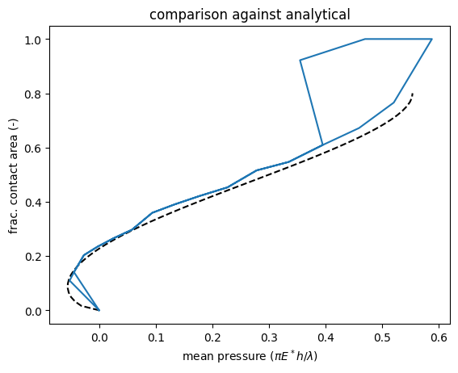
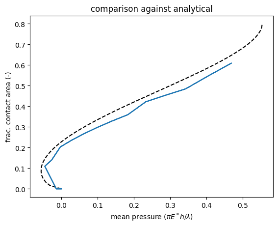

import numpy as np
from ContactMechanics import PeriodicFFTElasticHalfSpace
from SurfaceTopography import UniformLineScan
import matplotlib.pyplot as plt
from Adhesion.Interactions import VDW82, Exponential
from Adhesion.System import SmoothContactSystem, BoundedSmoothContactSystem
from Adhesion.ReferenceSolutions.sinewave import JKR
Smooth against JKR
s = 1.
Es = 1. / np.pi
alpha = 0.2 # nondimensionalized stress intensity factor
w = alpha ** 2 / (2 * Es)
fig, ax = plt.subplots()
ax.set_title("comparison against analytical")
a = np.linspace(0, 0.4)
ax.plot(np.sin(np.pi * a) ** 2 - alpha * np.sqrt(np.tan(np.pi * a)), a * 2,
"--k", label="JKR limit")
ax.set_xlabel(R"mean pressure ($\pi E^* h / \lambda$)")
ax.set_ylabel("frac. contact area (-)")
for p in [6, 8, 10, 12]:
n = 2 ** p
dx = s / n
z0 = 2 * np.sqrt(dx)
inter = VDW82(w * z0 ** 8 / 3, 16 * np.pi * w * z0 ** 2
).spline_cutoff(gamma=w
).linearize_core()
substrate = PeriodicFFTElasticHalfSpace((n,), young=Es,
physical_sizes=(s,),
fft='serial')
surface = UniformLineScan(
np.cos(np.arange(0, n) * np.pi * 2. / n),
physical_sizes=(s,))
system = SmoothContactSystem(substrate, inter, surface)
offsets = np.linspace(-2, 0.35, 20)
offsets = np.concatenate((offsets, offsets[-2::-1]))
contact_areas = np.zeros_like(offsets)
mean_pressures = np.zeros_like(offsets)
nsteps = len(offsets)
disp0 = None
gtol = 1e-5
i = 0
for offset in offsets:
if disp0 is not None:
disp0 += offset - offset_prev # noqa: F821
sol = system.minimize_proxy(
initial_displacements=disp0,
options=dict(gtol=gtol * max(Es * surface.rms_slope_from_profile(), abs(
inter.max_tensile)) * surface.area_per_pt,
# max absolute value of the gradient
# of the objective for convergence
),
# logger=Logger("laststep.log"),
method="L-BFGS-B",
offset=offsets[i],
callback=None,
lbounds="auto"
)
assert sol.success, sol.message
disp0 = sol.x
mean_pressures[i] = system.compute_normal_force() / s
contact_areas[i] = np.count_nonzero(system.gap < inter.r_infl) / n
# print("step {}".format(i))
offset_prev = offset
i += 1
abserror = np.max(abs(
mean_pressures - JKR.mean_pressure(contact_areas / 2, alpha)))
ax.plot(mean_pressures, contact_areas,
label="n={}, error={:.1e}".format(n, abserror))
plt.pause(0.0001)
ax.grid()
ax.legend()
plt.show()

Hardwall against JKR
s = 1.
Es = 1. / np.pi
alpha = 0.2 # nondimensionalized stress intensity factor
w = alpha ** 2 / (2 * Es) # = alpha^2 np.pi / 2
fig, ax = plt.subplots()
ax.set_title("comparison against analytical")
a = np.linspace(0, 0.4)
ax.plot(JKR.mean_pressure(a, alpha), a * 2, "--k", label="JKR limit")
ax.set_xlabel(R"mean pressure ($\pi E^* h / \lambda$)")
ax.set_ylabel("frac. contact area (-)")
for p in [6, 8, 10, 12]:
n = 2 ** p
dx = s / n
rho = np.sqrt(dx)
inter = Exponential(w, rho)
substrate = PeriodicFFTElasticHalfSpace((n,), young=Es,
physical_sizes=(s,),
fft='serial')
surface = UniformLineScan(
np.cos(np.arange(0, n) * np.pi * 2. / n),
physical_sizes=(s,), periodic=True)
system = BoundedSmoothContactSystem(substrate, inter, surface)
offsets = np.linspace(-2, 0.35, 20)
offsets = np.concatenate((offsets, offsets[-2::-1]))
contact_areas = np.zeros_like(offsets)
mean_pressures = np.zeros_like(offsets)
nsteps = len(offsets)
disp0 = None
gtol = 1e-5
i = 0
for offset in offsets:
if disp0 is not None:
disp0 += offset - offset_prev
sol = system.minimize_proxy(
initial_displacements=disp0,
options=dict(gtol=gtol * max(Es * surface.rms_slope_from_profile(), abs(
inter.max_tensile)) * surface.area_per_pt,
# max absolute value of the gradient
# of the objective for convergence
),
# logger=Logger("laststep.log"),
method="L-BFGS-B",
offset=offset,
callback=None,
lbounds="auto"
)
assert sol.success, sol.message
disp0 = sol.x
mean_pressures[i] = system.compute_normal_force() / s
contact_areas[i] = system.compute_contact_area() / s
# print("step {}".format(i))
offset_prev = offset
i += 1
abserror = np.max(abs(
mean_pressures - JKR.mean_pressure(contact_areas / 2, alpha)))
ax.plot(mean_pressures, contact_areas,
label="n={}, error={:.1e}".format(n, abserror))
plt.pause(0.0001)
ax.grid()
ax.legend()
plt.show()
